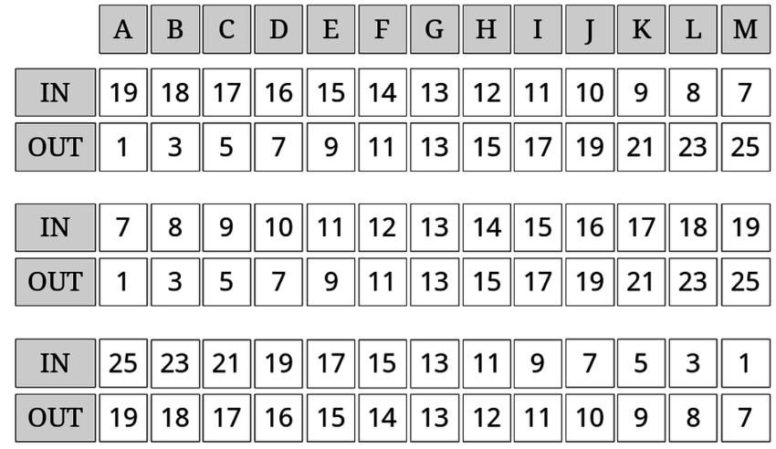

Conflicto
Influencia Social y Grupos
Juan Muñoz
Universitat Autònoma de Barcelona
http:/juan.psicologiasocial.eu

¿Qué es un conflicto?
Se calificará de “conflicto” una relación social en la medida en que la acción dentro de ella esté orientada intencionalmente a llevar a cabo la voluntad del actor contra la resistencia de la otra parte o partes.
Weber (1978, p. 38)
La lucha por los recursos
Teoría realista del conflicto
- El conflicto se basa en una situación objetiva.
- El conflicto aparece cuando dos grupos tienen intereses y metas mutuamente incompatibles: cuando un grupo alcanza su meta, el otro no puede alcanzarla.
(1906-1988)
Robber’s Cave


Sherif (1956)
La lucha por la identidad
El proceso de comparación social transforma las simples discriminaciones perceptivas o cognitivas en actitudes y acciones diferenciales que favorecen al propio grupo sobre el grupo externo. Motiva el aumento competitivo de criterios de diferenciación entre los grupos y otras estrategias además de la discriminación directa para conseguir una distintividad positiva“
Turner (1981, p. 82)
Categorización - conflicto
El conflicto aparece cuando se categoriza a las partes como representantes de diferentes grupos o identidades sociales.
Efectos de la categorización
La categorización genera…
- Favoritismo endogrupal
- Asumimos que los argumentos de nuestro propio grupo son mejores. Argumentamos de acuerdo con la identidad endogrupal.
- Hostilidad exogrupal
- Asumimos que los argumentos del otro grupo son peores. Interpretamos su significado de acuerdo a la identidad exogrupal.
Klee - Kandisnly

Grupo mínimo

Reducción del conflicto
- Decategorización
- Recategorización
- Diferenciación intergrupal mutua
Turner & Hewstone (2010)
Strangers
Tadmor & Nattiv (2003)
Referencias
Sherif, M. (1956). Experiments in group conflict. Scientific American, 195, 54–58.
Tadmor, E., & Nattiv, G. (2003). Strangers. Drama, Fox Searchlight Pictures. Retrieved from http://www.youtube.com/watch?v=RZLmxxz8VAU
Tajfel, H. (1975). La categorización social. In S. Moscovici (Ed.), Introducción a la psicología social (pp. 348–387). Barcelona: Planeta.
Turner, J. C. (1981). The experimental social psychology of intergroup behavior. In J. C. Turner & H. Giles (Eds.), Intergroup behaviour (pp. 66–101). Oxford: Basil Blackwell.
Turner, R. N., & Hewstone, M. (2010). Mutual Intergroup Differentiation Model. Encyclopedia of Group Processes & Intergroup Relations. Thousand Oaks: SAGE. http://doi.org/10.4135/9781412972017
Weber, M. (1978). Economy and Society: An outline of interpretive sociology. Berkeley: University of California Press. Retrieved from http://archive.org/details/MaxWeberEconomyAndSociety